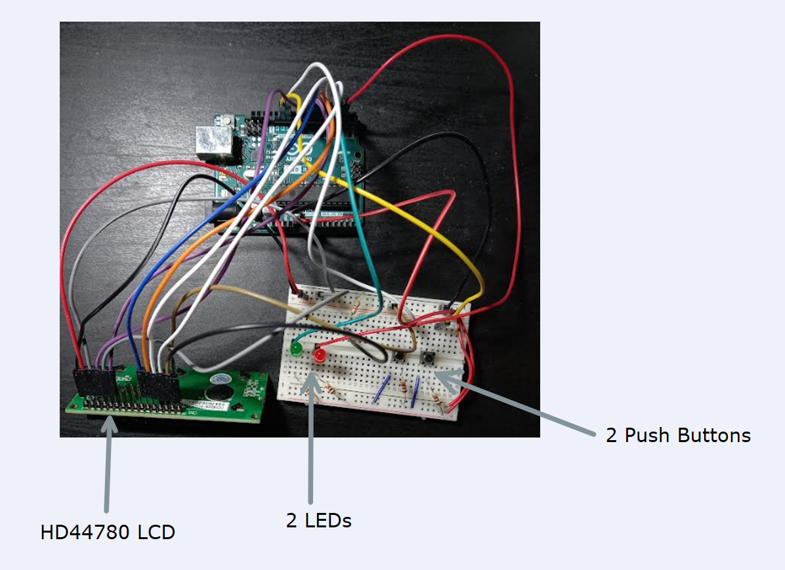
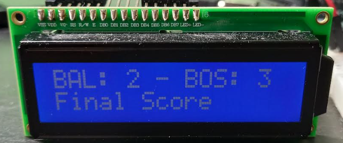
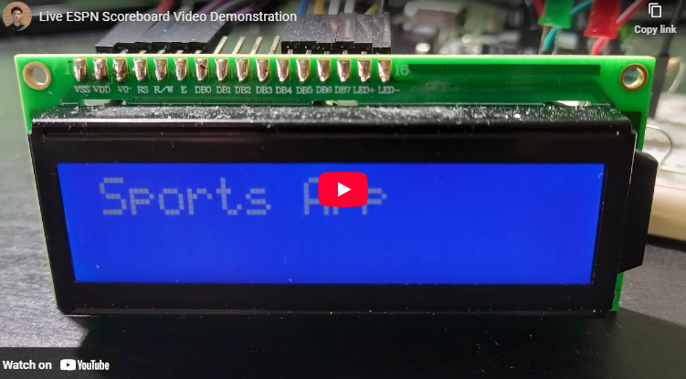

Live ESPN Scoreboard



Problem: Sports fans want to follow live games in real time, but scoreboards depend on constantly changing data feeds that come in different formats. I built this project to explore how live sports data could be pulled from APIs and displayed on a simple, interactive Arduino-based system.
Solution: I built a system that parsed API responses, displayed team scores, game clocks, and start times on an LCD, and used LED indicators to flash when a team scored. To ensure reliability, I implemented serial print debugging for data validation and created reusable C++ structs to encapsulate button debouncing and LED functionality, improving modularity and efficiency.
Impact: A key challenge was navigating through different JSON formats to extract the needed information. By building structured parsing logic and validating outputs at each step, I gained experience handling edge cases in real-time data processing. This project improved my skills in API integration, embedded debugging, and modular C++ development for hardware systems.
Features: Arduino, C/C++, ESPN APIs, JSON Parsing, LCD Display, LED Indicators